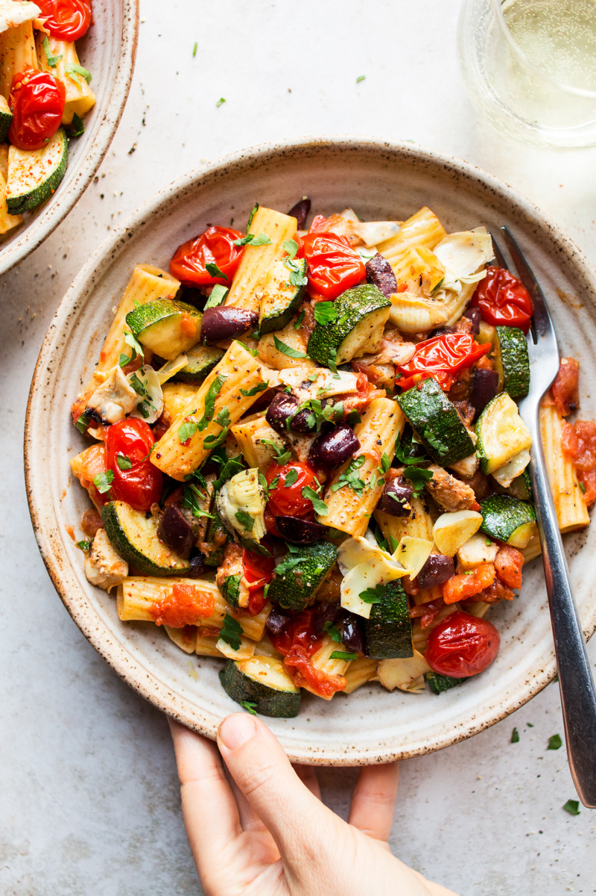
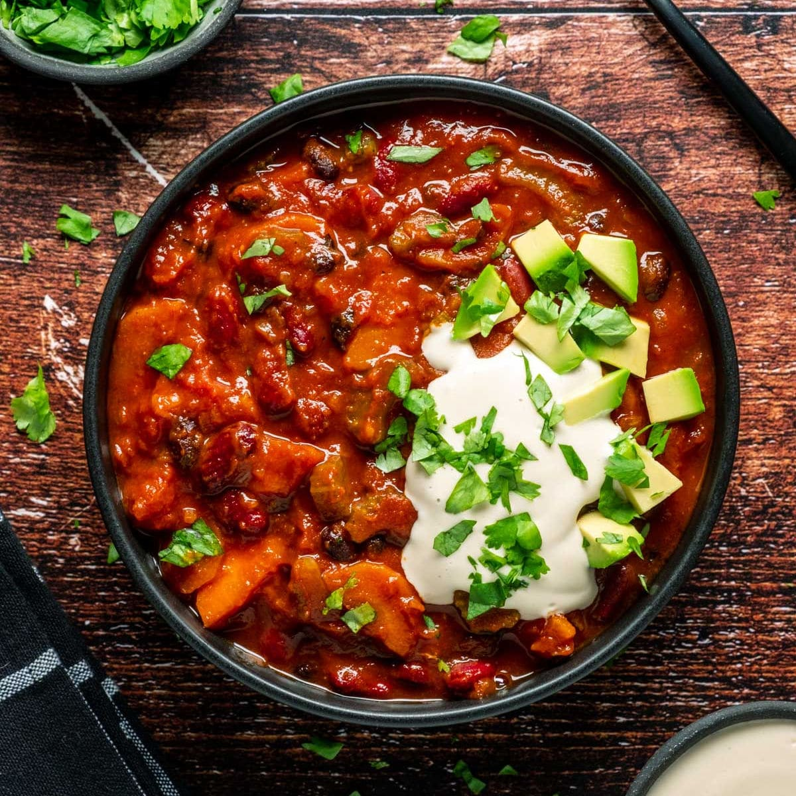

Vegan-Summer-Pasta
🥗 Vegetable Pasta Salad

Description:
This is a simple summer pasta recipe for you to prepare after long day of school or work. It uses the best of summer produce: zucchini, ripe tomatoes, grilled artichokes and Kalamata olives and can be thrown together in a matter of minutes.
Ingredients:
- 200 g / 7 oz rigatoni or penne pasta (GF if needed)
- 20 ml / 4 tsp extra virgin olive oil
- 200 g / 7 oz courgette / zucchini (1 medium), cut into chunks
- 2 garlic cloves, roughly chopped
- salt and black pepper, to taste
- 2 large ripe tomatoes, peeled and chopped
- 8 cherry tomatoes, halved
- a good pinch of sugar (optional)
- 2 tsp balsamic vinegar
- a good pinch of chilli flakes (I used fine Korean chilli flakes)
- 4 charred artichoke heart halves, chopped
- 8 Kalamata olives, de-stoned and chopped
- chopped fresh parsley, to garnish (optional)
Steps
- Cook the pasta just short of al dente (the pasta I used takes 12 min to cook al dente, I cooked it for 11 min) following the instructions on the packet, saving about 60 ml / ¼ cup of cooking water just before you drain your pasta.
- Heat up 2 tsp oil in a non-stick pan (I like to use a stainless steel one for this dish). Once hot, add zucchini and fry it on a gentle heat until caramelised, stirring from time to time.
- Once zucchini is almost done, add the garlic and allow it to fry in amongst the zucchini, stirring frequently. Do not let it brown as it will make it taste bitter.
- Season with salt and pepper and transfer out of the pan. Set aside.
- Add chopped tomatoes and a good splash of water (or vegan wine if you’d like) into the same pan.
- Allow the tomatoes to break down and thicken a little. Add a splash more liquid if the pan is getting dry.
- Season the sauce with salt, pepper, a pinch of sugar (if using), balsamic vinegar and a pinch of chilli if using. Stir well. Add cherry tomato halves to the pan, allow the cherry tomatoes to soften in the sauce.
- Add drained pasta to the sauce and a bit of pasta cooking water if needed. Coat the pasta in the tomato sauce. Mix well and adjust the seasoning if needed – remember that olives will add saltiness. At this point you may want to add a touch more olive oil for a more luxurious finish.
- Finally return fried zucchini and add chopped artichoke hearts and olives to the pan.
- Divide between two bowls and sprinkle with fresh parsley.
Vegan-Summer-Pasta
🥗 Vegan Chili

Description:
This healthy vegan chilli recipe packs in plenty of vegetables and is full of flavour. You can serve it with rice or in jacket potatoes for a filling supper
Ingredients:
- 3 tbsp olive oil
- 2 sweet potatoes
- 2 tsp smoked paprika
- 2 tsp ground cumin
- 1 onion
- 2 carrots
- 2 celery sticks
- 2 garlic cloves
- 1/2 tsp chili powder(depending on how spicy you like it)
- 1 tsp dried oregano
- 1 tbsp tomato purée
- 1 red pepper
- 2 cans of chopped tomatoes
- 1 can black beans
- 1 can of kidney beans
- lime wedges
- guacamole
- white rice
Steps
- Heat the oven to 200C/180C fan/gas 6. Put the sweet potato in a roasting tin and drizzle over 1½ tbsp oil, 1 tsp smoked paprika and 1 tsp ground cumin. Give everything a good mix so that all the chunks are coated in spices, season with salt and pepper, then roast for 25 mins until cooked.
- Meanwhile, heat the remaining oil in a large saucepan over a medium heat. Add the onion, carrot and celery. Cook for 8-10 mins, stirring occasionally until soft, then crush in the garlic and cook for 1 min more. Add the remaining dried spices and tomato purée. Give everything a good mix and cook for 1 min more.
- Add the red pepper, chopped tomatoes and 200ml water. Bring the chilli to a boil, then simmer for 20 mins. Tip in the beans and cook for another 10 mins before adding the sweet potato. Season to taste then serve with lime wedges, guacamole, rice and coriander. Will keep, in an airtight container in the freezer, for up to three months.
- Heat the oil in a large frying pan over a medium heat. Add the onion, carrot and celery. Cook for 8-10 mins, stirring occasionally until soft, then crush in the garlic, tip in the sweet potato chunks and cook for 1 min more. Add all the dried spices, oregano and tomato purée, cook for 1 min, then tip into a slow cooker.
- Add chopped tomatoes and a good splash of water (or vegan wine if you’d like) into the same pan.
- Allow the tomatoes to break down and thicken a little. Add a splash more liquid if the pan is getting dry.
- Add the red pepper and chopped tomatoes. Give everything a good stir then cook on low for 5 hrs. Stir in the beans and cook for another 30 mins to 1 hr. Season to taste and serve with lime wedges, guacamole, rice and coriander.